ASyS Practica 3: Señales en tiempo continuo
Contents
- Integrantes
- Objetivos de la Practica:
- Introduccion
- Problema 1
- 1.11 MATLAB: TRABAJANDO CON FUNCIONES
- 1.11-1 Anonymous Functions
- 1.11-2 Operadores relacionales y función de paso unitario
- 1.11-3 Visualización de operaciones en la variable independiente
- 1.11-4 Integración numérica y estimación de la energía de la señal
- Problema 2
- A) x(t-4)
- B) x(t/1.5)
- C) x(−t)
- D) x(2t −4)
- E) x(2−t)
- Problema 3
- Problema 4
- Problema 5
- Problema 6
Integrantes
- Cruz Guadiana Mauricio
- Cuin Tinoco Victor Manuel
- Fabian Arturo Garibay Reyes
- Santos Garrido Diana Karen
Objetivos de la Practica:
- Manipulación básica de MATLAB
- Gráficas de señales reales y complejas continuas
- Transformación de señales continuas (escalamientos y traslaciones)
- Calculo de energía y potencia de señales continuas
Introduccion
El equipo investigo como se grafica con Phyton y como evidencia se realizo el Problema 4 A lo que el resultado nos dio:

El codigo con el que se genero la grafica pues consultarse en este enlace
Problema 1
En este problema se recreo completamente toda la seccion 1.11 del libro "Lathi" y es presentada por consiguiente:
1.11 MATLAB: TRABAJANDO CON FUNCIONES
Trabajar con funciones es fundamental para las aplicaciones de señales y sistemas. MATLAB proporciona varios métodos para definir y evaluar funciones. La comprensión y el uso competente de estos. Los métodos son, por tanto, necesarios y beneficiosos.
1.11-1 Anonymous Functions
Muchas funciones simples se representan más convenientemente mediante el uso anónimo de MATLAB. Una función anónima proporciona una representación simbólica de una función definida en términos de operadores, funciones u otras funciones anónimas de MATLAB. Por ejemplo, considere definiendo la sinusoide amortiguada exponencialmente f(t) = e−t cos(2πt).
f = @(t) exp(-t).*cos(2*pi*t);
En este contexto, el símbolo @ identifica la expresión como una función anónima, que se asigna un nombre de f. Los paréntesis que siguen al símbolo @ se utilizan para identificar la función independiente variables (argumentos de entrada), que en este caso es la única variable de tiempo t. Argumentos de entrada, como como t, son locales de la función anónima y no están relacionados con ninguna variable del espacio de trabajo con el mismos nombres. Una vez definida, f(t) se puede evaluar simplemente pasando los valores de entrada de interés. Para ejemplo,
t = 0; f(t)
ans =
1
evalúa f(t) en t = 0, confirmando el resultado esperado de la unidad. El mismo resultado se obtiene mediante pasando t = 0 directamente.
f(0);
Las entradas vectoriales permiten la evaluación de múltiples valores simultáneamente. Considere la tarea de trazar f(t) en el intervalo (−2 ≤ t ≤ 2). El comportamiento de la función bruta es claro: f(t) debería oscilar cuatro veces con una envolvente en decadencia. Dado que los bocetos precisos a mano son engorrosos. Los gráficos generados por MATLAB son una alternativa atractiva. Como ilustra el siguiente ejemplo, el cuidado Se deben tomar medidas para garantizar resultados confiables. Supongamos que se elige el vector t para incluir solo los números enteros contenidos en (−2 ≤ t ≤ 2), es decir, [-2,-1, 0, 1, 2].
t = (-2:2);
Esta entrada vectorial se evalúa para formar una salida vectorial.
f(t)
ans =
7.3891 2.7183 1.0000 0.3679 0.1353
El comando plot grafica el resultado, que se muestra en la figura 1.46.
plot(t,f(t)); xlabel('t'); ylabel('f(t)'); grid; title('Figure 1.46 f(t) = e−t cos(2πt) for t = (-2:2).');

Las líneas de cuadrícula, agregadas mediante el comando de cuadrícula, ayudan a identificar las características. Desafortunadamente, el gráfico no ilustra el comportamiento oscilatorio esperado. Se requieren más puntos para adecuadamente representar f(t). La pregunta entonces es ¿cuántos puntos son suficientes? Si se eligen muy pocos puntos, la información está perdida. Si se eligen demasiados puntos, se desperdicia memoria y tiempo. Se necesita un equilibrio. Para funciones oscilatorias, normalmente es adecuado trazar de 20 a 200 puntos por oscilación. Para el presente En este caso, se elige t para dar 100 puntos por oscilación.
t = (-2:0.01:2);
Nuevamente, la función se evalúa y traza.
plot(t,f(t)); xlabel('t'); ylabel('f(t)'); grid; title('Figure 1.47 f(t) = e−t cos(2πt) for t = (-2:0.01:2).');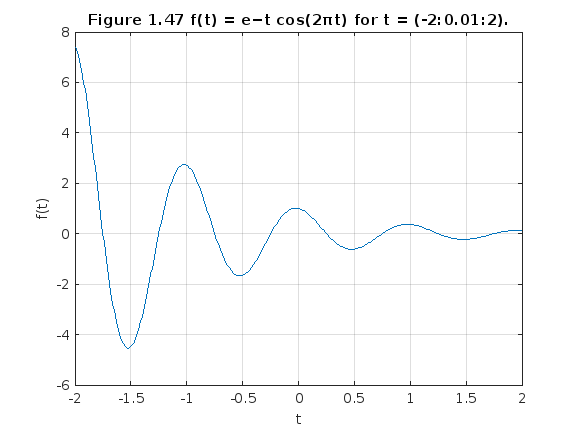
El resultado, que se muestra en la figura 1.47, es una descripción precisa de f(t)
1.11-2 Operadores relacionales y función de paso unitario
La función escalón unitario u(t) surge naturalmente en muchas situaciones prácticas. Por ejemplo, un paso unitario puede Modelar el acto de encender un sistema. Con la ayuda de operadores relacionales, funciones anónimas. puede representar la función de paso unitario. En MATLAB, un operador relacional compara dos elementos. Si la comparación es cierta, una verdad lógica. (1) se devuelve. Si la comparación es falsa, se devuelve un falso lógico (0). A veces llamado indicador funciones, los operadores relacionales indican si una condición es verdadera. Seis operadores relacionales son disponibles: <, >, <=, >=, == y ~=. La función de paso unitario se define fácilmente utilizando el operador relacional >=.
u = @(t) 1.0.*(t>=0);
Cualquier función con una discontinuidad de salto, como el paso unitario, es difícil de trazar. Considere la posibilidad de trazar u(t) usando t = (-2:2).
t = (-2:2); plot(t,u(t)); xlabel('t'); ylabel('u(t)'); title('Figure 1.48 u(t) for t = (-2:2).');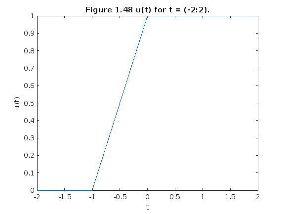
Dos problemas importantes son evidentes en el gráfico resultante, que se muestra en la figura 1.48. Primero, MATLAB escala automáticamente los ejes del gráfico para vincular estrechamente los datos. En este caso, esto normalmente La característica deseable oscurece la mayor parte de la trama. En segundo lugar, MATLAB conecta los datos del trazado con líneas, haciendo que una verdadera discontinuidad de salto sea difícil de lograr. La resolución gruesa del vector t enfatiza el efecto al mostrar una línea inclinada errónea entre t = −1 y t = 0. El primer problema se corrige ampliando verticalmente el cuadro delimitador con el eje dominio. El segundo problema se reduce, pero no se elimina, sumando puntos al vector t.
t = (-2:0.01:2); plot(t,u(t)); xlabel('t'); ylabel('u(t)'); axis([-2 2 -0.1 1.1]); title('Figure 1.49 u(t) for t = (-2:0.01:2) with axis modification.');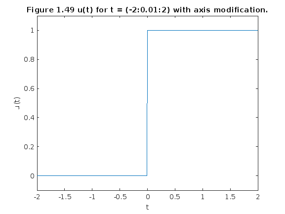
El argumento vectorial de cuatro elementos del eje especifica el eje x mínimo, el eje x máximo y el eje y respectivamente. Los resultados mejorados se muestran en la figura 1.49. Los operadores relacionales se pueden combinar usando AND lógico, O lógico y negación lógica: &, | y ~, respectivamente. Por ejemplo, (t>0)&(t<1) y ~((t<=0)|(t>=1)) prueban si 0 < t < 1. Para demostrarlo, considere definir y trazar el pulso unitario p(t) = u(t) − u(t − 1), como se muestra en Figura 1.50:
p = @(t) 1.0.*((t>=0)&(t<1)); t = (-1:0.01:2); plot(t,p(t)); xlabel('t'); ylabel('p(t) = u(t)-u(t-1)'); axis([-1 2 -.1 1.1]); title('Figure 1.50 p(t) = u(t)−u(t −1) over (−1 ≤ t ≤ 2).');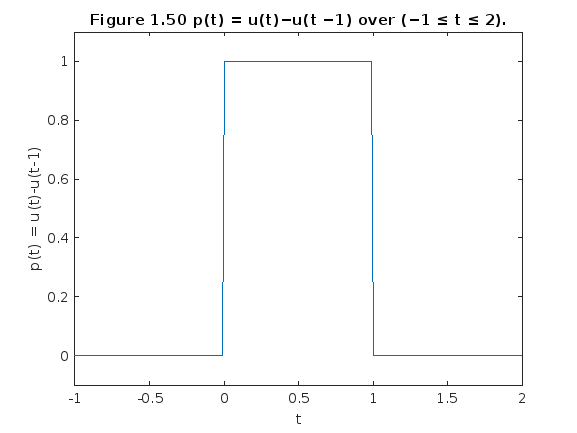
Dado que las funciones anónimas se pueden construir utilizando otras funciones anónimas, podríamos Hemos utilizado nuestra función anónima de paso unitario previamente definida para definir p(t) como p = @(t) u(t)-u(t-1);
Para operandos escalares, MATLAB también admite dos construcciones lógicas de cortocircuito. A el AND lógico de cortocircuito se realiza mediante &&, y el OR lógico de cortocircuito se realiza mediante usando. Los operadores lógicos de cortocircuito suelen ser más eficientes que los operadores lógicos tradicionales porque prueban la segunda parte de la expresión sólo cuando es necesario. Es decir, cuando un escalar tiene la expresión A se encuentra falsa en (A&&B), la expresión escalar B no se evalúa, ya que un resultado falso ya está garantizado. De manera similar, la expresión escalar B no se evalúa cuando la expresión escalar A es encontrado verdadero en (A||B), ya que ya se garantiza un resultado verdadero.
1.11-3 Visualización de operaciones en la variable independiente
%Comúnmente se encuentran dos operaciones sobre la variable independiente de una función: desplazamiento y % escalada. Las funciones anónimas son muy adecuadas para investigar ambas operaciones. % Considere g(t) = f(t)u(t) = e−t cos(2πt)u(t), una versión causal de f(t). MATLAB fácilmente % multiplica funciones anónimas. Por lo tanto, creamos g(t) multiplicando nuestras funciones anónimas. % para f(t) y u(t). g = @(t) f(t).*u(t);
Una operación combinada de cambio y escala está representada por g(at + b), donde a y b son constantes reales arbitrarias. Como ejemplo, considere graficar g(2t +1) sobre (−2 ≤ t ≤ 2). Con a = 2, la función se comprime por un factor de 2, lo que da como resultado el doble de oscilaciones por unidad t. Añadiendo la condición b > 0 desplaza la forma de onda hacia la izquierda. Dada la función anónima g, una gráfica precisa es casi trivial de obtener.
t = (-2:0.01:2); plot(t,g(2*t+1)); xlabel('t'); ylabel('g(2t+1)'); grid; title('Figure 1.51 g(2t +1) over (−2 ≤ t ≤ 2).')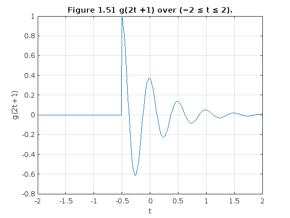
La Figura 1.51 confirma la compresión esperada de la forma de onda y el desplazamiento hacia la izquierda. Como comprobación final, tenga en cuenta que la función g(·) se activa cuando el argumento de entrada es cero. Por lo tanto, g(2t + 1) debería activarse cuando 2t +1 = 0 o en t = −0,5, hecho que se confirma nuevamente en la figura 1.51.
A continuación, considere graficar g(−t + 1) sobre (−2 ≤ t ≤ 2). Como a < 0, la forma de onda será reflejado. Agregar la condición b > 0 desplaza la forma de onda final hacia la derecha.
plot(t,g(-t+1)); xlabel('t'); ylabel('g(-t+1)'); grid; title('Figure 1.52 g(−t +1) over (−2 ≤ t ≤ 2).');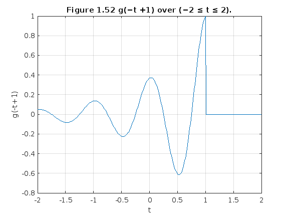
La figura 1.52 confirma tanto la reflexión como el desplazamiento a la derecha. Hasta este punto, las Figs. 1,51 y 1,52 podrían esbozarse razonablemente a mano. Considere la posibilidad de trazar la función más complicada h(t) = g(2t + 1) + g(−t + 1) sobre (−2 ≤ t ≤ 2) (figura 1.53); un Un boceto a mano preciso sería bastante difícil. Con MATLAB el trabajo es mucho menos pesado
plot(t,g(2*t+1)+g(-t+1)); xlabel('t'); ylabel('h(t)'); grid; title('Figure 1.53 h(t) = g(2t +1)+g(−t +1) over (−2 ≤ t ≤ 2).');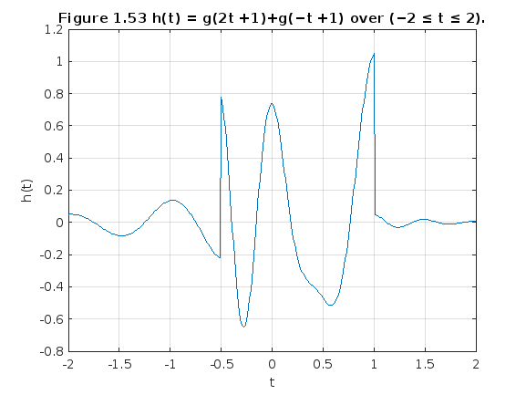
1.11-4 Integración numérica y estimación de la energía de la señal
Las señales interesantes suelen tener representaciones matemáticas no triviales. Computar la energía de la señal, que implica integrar el cuadrado de estas expresiones, puede ser una tarea desalentadora. Afortunadamente, Muchas integrales difíciles se pueden estimar con precisión mediante técnicas de integración numérica.
Incluso si la integración parece simple, la integración numérica proporciona una buena manera de verificar resultados analíticos. Para empezar, considere la señal simple x(t) = e−t(u(t)-u(t-1)). La energía de x(t) se expresa como Ex = int((∞),(−∞) |x(t)|2 dt) = int((0),(1) e−2t dt. La integración produce Ex = 0,5(1 − e−2) ≈ 0,4323. La energía La integral también se puede evaluar numéricamente. La figura 1.27 ayuda a ilustrar el método simple de aproximación rectangular: evalúe el integrando en puntos uniformemente separados por t, multiplique cada uno por t para calcular las áreas del rectángulo y luego sumar todos los rectángulos. Primero, creamos la función. x(t).
x = @(t) exp(-t).*((t>=0)&(t<1));
Con t = 0,01 se crea un vector de tiempo adecuado.
t = (0:0.01:1);
El resultado final se calcula utilizando el comando suma.
E_x = sum(x(t).*x(t)*0.01) E_x = 0.4367
E_x =
0.4367
E_x =
0.4367
El resultado no es perfecto, pero con un error relativo del 1% está cerca. Reduciendo t, la aproximación es mejorado. Por ejemplo, t = 0,001 produce E_x = 0,4328, o un error relativo del 0,1%. Aunque es fácil de visualizar, la aproximación rectangular no es la mejor integración numérica técnica. La función quad de MATLAB implementa una mejor técnica de integración numérica llamada cuadratura de Simpson adaptativa recursiva.† Para operar, quad requiere una función que describa el integrando, el límite inferior de integración y el límite superior de integración. Observe que no es necesario especificar. Para utilizar quad para estimar Ex, primero se debe describir el integrando.
x_squared = @(t) x(t).*x(t);
La estimación de Ex sigue inmediatamente
E_x = quad(x_squared,0,1) E_x = 0.4323
E_x =
0.4323
E_x =
0.4323
En este caso, el error relativo es −0,0026%. Se pueden utilizar las mismas técnicas para estimar la energía de señales más complejas. Considerar g(t), definido anteriormente. La energía se expresa como Eg = $ ∞ 0 e−2t cos2 (2πt)dt. Una solución de forma cerrada existe, pero requiere algo de esfuerzo. MATLAB proporciona una respuesta más rápidamente
g_squared = @(t) g(t).*g(t);
Aunque el límite superior de integración es infinito, la envolvente que decae exponencialmente asegura g(t) es efectivamente cero mucho antes de t = 100. Por lo tanto, se utiliza un límite superior de t = 100 junto con t = 0,001.
t = (0:0.001:100); E_g = sum(g_squared(t)*0.001) E_g = 0.2567
E_g =
0.2567
E_g =
0.2567
Se obtiene una aproximación ligeramente mejor con la función quad.
E_g = quad(g_squared,0,100) E_g = 0.2562
E_g =
0.2562
E_g =
0.2562
Problema 2
Para la señal x(t) ilustrada en la figura P1.2-2, bosqueje:
- A) x(t −4)
- B) x(t/1.5)
- C) x(−t)
- D) x(2t −4)
- E) x(2−t)
Iniciamos recreando la señal, mostrada en la grafica que muestra "Lathi" Hacemos anonima la funcion y la guardamos en la varibale "y". Continuamente proponemos un intervalo adecuado y se pueda representar en la grafica correctamente.
sympref('HeavisideAtOrigin',0);
y = @(t) (-t.*(heaviside(t+4)) + 2*t.*(heaviside(t))).*heaviside(-t+2)
t= -7:0.01:7;
y =
function_handle with value:
@(t)(-t.*(heaviside(t+4))+2*t.*(heaviside(t))).*heaviside(-t+2)
Graficamos:
plot(t,y(t)); xlabel('t'); ylabel('y(t)'); title('Fig. P1.2-2');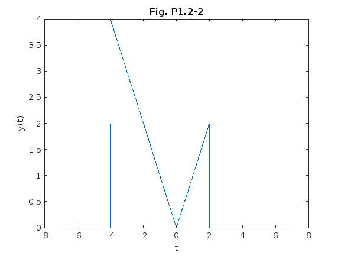
A) x(t-4)
Como se observa en el inciso "A", podemos ver que se trata de una traslacion horizontal en 4 unidades. Por lo que simplemente realizamos la traslacion y la graficamos.
A=y(t-4); plot(t,A); xlabel('t'); ylabel('y(t-4)'); title('Figura A');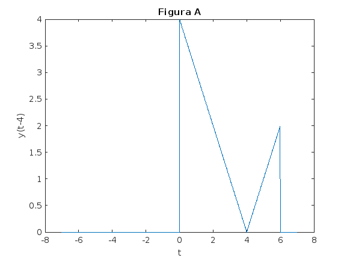
Como se muestra en la Figura A, la grafica afectivamente se traslado cuatro unidades a la derecha.
B) x(t/1.5)
En el inciso "B" podemos percatarnos que ahora se trata de una division entre la variable "t", pero recordando un poco sobre el comportamiento de las funciones, tenemos que al dividir la variable de la funcion, se ancha la amplitud de manera horizontal sin modificar la altura de la señal original. Por lo que:
B=y(t./1.5); plot(t,B); xlabel('t'); ylabel('y(t/1.5'); title('Figura B');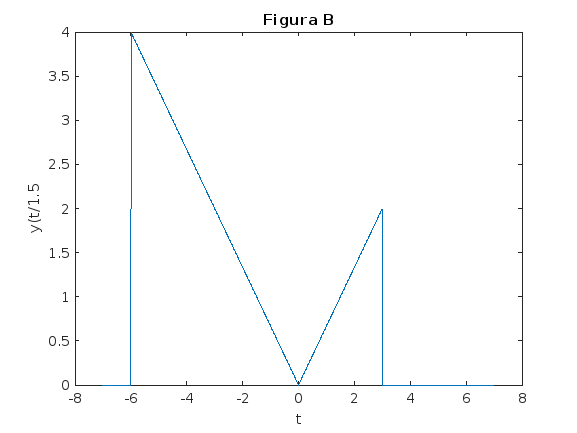
Como se determino inicialmente, la funcion se ampli de manera horizontal en un valor de 1.5
C) x(−t)
En el inciso "C" se muestra la funcion original, con la unica diferencia que tiene un signo negativo en la "x", esto nos representa una inversion horizontal de la funcion original, es decir, realiza un efecto espejo.
C=y(-t); plot(t,C); xlabel('t'); ylabel('y(-t)'); title('Figura C');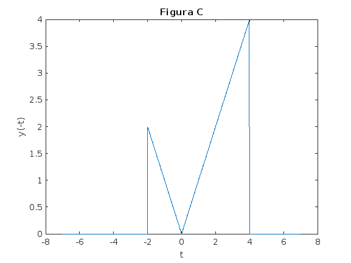
Tal y como se argumento es una inversion horizontal de la funcion original.
D) x(2t −4)
Podemos ver que ahora se presentan dos cambios, una compresion y una traslacion, ambas de manera horizontal, obsevando se deduce que se comprime entre dos, respecto a la funcion original y ademas se traslada 4 unidades.
D= y(2.*t-4); plot(t,D); xlabel('t'); ylabel('y(2t-4)'); title('Figura D');

Como se dedujo se comprimio y se traslado, respecto a la funcion original.
E) x(2−t)
En el inciso "E" se muestra una "t" negativa y un 2 positivo, reordenando vemos x(-t+2), por lo cual se trata de una inversion y una traslacion, ambas horizontales, la traslacion es de dos unidades.
E=y(2-t); plot(t,E); xlabel('t'); ylabel('y(2-t)'); title('Figura E');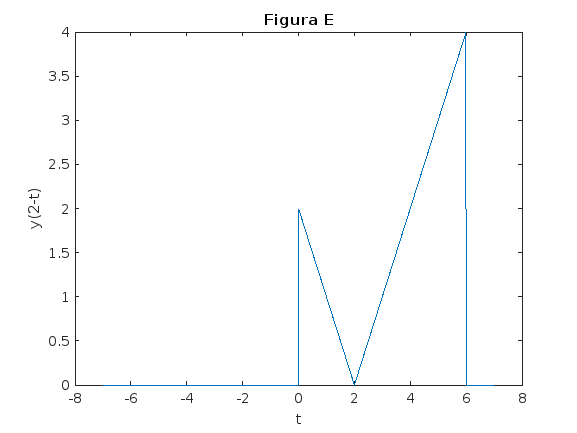
Como se menciono, se trataba de una inversion y traslacion de 2 unidades
Problema 3
Proporcionar código MATLAB y resultados que tracen la porción impar xo(t) de la función x(t) = 2−t cos(2πt)u(t−π) en un intervalo de longitud adecuada utilizando un número adecuado de puntos.
Para iniciar debemos declarar la funcion que nos propone el ejercicio de lathi, recordando que debemos hacer la funcion anonima.
x = @(t) 2.^(-t).*cos(2*pi*t).*heaviside(t-pi);
Una vez ya declarada la funcion y guardandola en la variable "x", podemos continuar...
Continuaremos definiendo a la variable "t" en un intervalo adecuado para graficar la funcion, entre -10=<t=<10.
t=-10:0.01:10;
Una vez definiendolo, procedemos a graficar la funcion:
plot(t,x(t)); xlabel('t');ylabel('x(t)'); ax = gca; ax.XAxisLocation = 'origin'; ax.YAxisLocation = 'origin'; title("Original");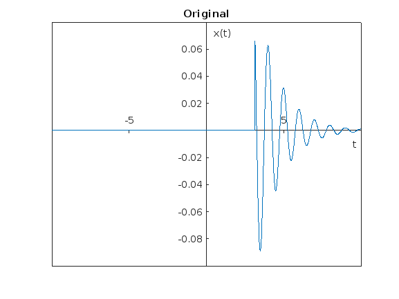
La grafica nos muestra la señal original de la funcion.
Procedemos a declarar la formula para mostrar la grafica impar de una funcion, ((x(t)- x(-t))./2) en la cual nos indica que es la funcion original, menos la misma funcion invertida, entre dos. Con esta formula obtendremos la forma impar de la funcion dada, entonces procedemos a colocar la formula y volverla anonima guardandola en la variable "x0".
x0= @(t) (x(t)- x(-t))./2;
Una vez teniendo la formula, procedemos a graficar, a lo que nos muestra:
plot(t,x0(t)); ax = gca; ax.XAxisLocation = 'origin'; ax.YAxisLocation = 'origin'; title('Grafica impar de la funcion');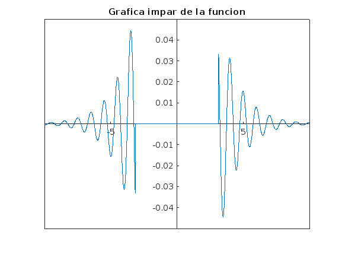
A lo que nos muestra la señal impar de manera grafica.
Problema 4
Se Muestra en la Introduccion de la practica.
Problema 5
No realizado
Problema 6
El resultado de esta aplicacion se puede observar en la siguiente imagen, en la cual se enseña como al darle una funcion "t", la grafica y selecciona los intervalos dados, en este caso entre -5 y 2. Donde se puede mostrar que corta a la funcion justo en esos valores de t
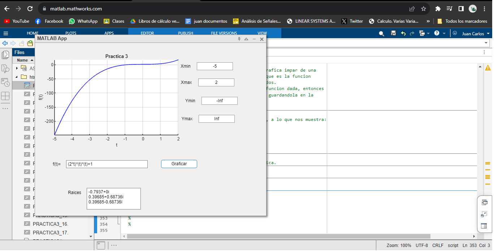
Primeramente para explicar, las lineas de codigo tenemos que mostrar los componentes que utilizamos, en primer lugar usamos Axes (Para graficar), Edit Field text(Para ingresar las funciones), Edit Field Numerico (Para ingresar los limites de la funcion y variaciones max y min), Push Button (Para que inicie el proceso de graficacion), Area Text (mostrar raices).
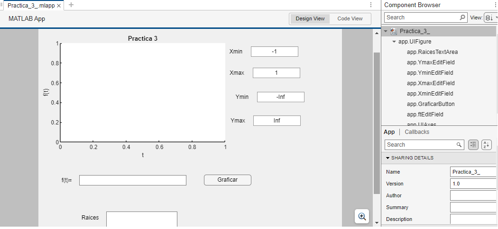
Desenglozando el codigo vamos al apartado de callbacks del push button para que todo gire en torno al presionarlo. Primero vamos a leer los caracteres que tiene la funcion que ingresa el usuario, especificamente los valores de cada uno. Despues tenemos que convertir esa funcion en una variable simbolica, llamando a las funciones que nos proporciona MATLAB. Al final describimos la variable simbolica en un vector, despues calulamos las raices del polinomio Y ese valor de las raices las enviamos al area de texto (esto sirve para identificar partes reales de imaginarias). Siguiendo tenemos que programar la seccion para establecer limites de maximos y minimos en valores de x & y para poder tener un campo especifico de la funcion, tomados en intervalos. Asi mismo, damos en el intervalo de integracion de 100 puntos, para que en la grafica se vea fluida la funcion ya graficada. Para graficar haremos uso de la funcion plot, donde se debe especificar que se dibuja en el panel de la grafica. Despues colocamos dos if's en el cual se define los valores de los ejes en x&y, recordando que se reciben valores infinitos, y con ayuda del if, se calcularan automaticamente, con ayuda de los valores maximos de t y l.
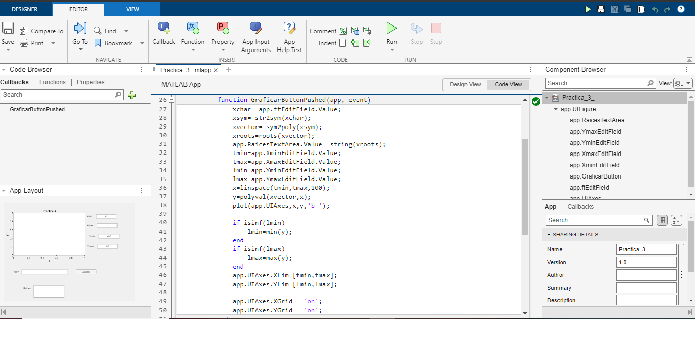
De esta manera se intento recrear una app para poder manipular las funciones proporcionadas por el usuario, entre intervalos dados por los ususarios.